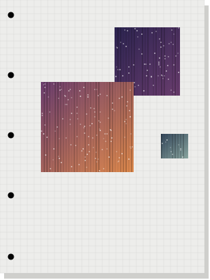
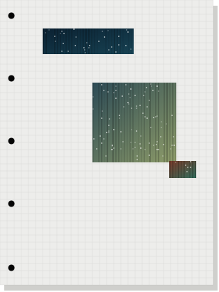
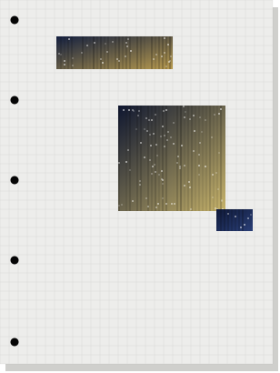

The quiet handover
The quiet handover
Field guide, 6 minutes

Counting without closing
Counting without closing
Field guide, 4 minutes

How early is early enough?
How early is early enough?
Notes, 3 minutes